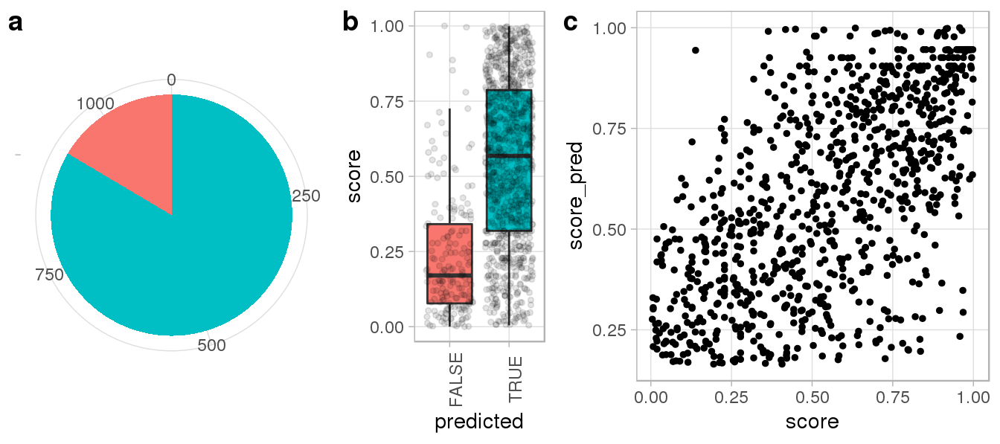

In this benchmark, we will use Repguide to predict genomic binding sites for a publically available set of 12 guideRNAs targeting LTR5_Hs long terminal repeats and compare the results to experimentally determined Cas9 ChIP-seq peak intensities [1].
We first create a hg38 guideSet and provide the guide sequences to map.
library(Repguide)
library(BSgenome.Hsapiens.UCSC.hg38)
library(tidyverse)
# Path to RepeatMasker hg38 repeat annotation (provided, LTRs only)
repeats_path <- system.file(package = 'Repguide', 'extdata', 'hg38_ucsc_rmsk_ltr.txt.gz')
gs <- createGuideSet(genome = Hsapiens, # Hsapiens is the short version of BSgenome.Hsapiens.UCSC.hg38
tes = repeats_path) # can be either path to file or GRanges object)
#> Created new guideSet at Mon Sep 16 10:06:29 2019
gs <- addTargets(gs, 'LTR5_Hs')
# Import guideRNA sequences used in Fuentes et al. [1] against LTR5_Hs
guides_path <- system.file(package = 'Repguide', 'extdata', 'fuentes_elife_2018_guides.fasta')
guides_fuentes <- as.character(Biostrings::readDNAStringSet(guides_path))
gs_fuentes <- addGuides(gs,
guides = guides_fuentes,
n_mismatches = 3,
min_Son = 0,
max_Soff = Inf,
gc_content = c(0,1),
PAM = 'NGG')
#> [1] "Aligning kmers against: BSgenome.Hsapiens.UCSC.hg38"
#> [1] "Annotating guides"
#> [1] "Computing guide scores"
#> [1] "Blacklisting kmers"We can extract predicted binding sites using the mappings accessor and import provided dCAS9 ChIP peak coordinates from Fuentes et al. [1]. To facilitate comparison, we restrict our analysis to peaks on the main chromosome assemblies.
# Extract predicted binding sites
pred_sites <- mappings(gs_fuentes)
# Import experimental binding sites
peaks_path <- system.file(package = 'Repguide', 'extdata', 'fuentes_elife_2018_dCas9_peaks.bed')
exp_sites <- rtracklayer::import.bed(peaks_path)
# Throw chromosomes not present in guideSet
seqlevels(exp_sites, pruning.mode = 'coarse') <- seqlevels(pred_sites) We then compare the absolute number and binding intensities of correctly predicted binding sites.
hits <- IRanges::findOverlaps(exp_sites, pred_sites)
# Add logical whether or not peak was predicted by Repguide
exp_sites$predicted <- 1:length(exp_sites) %in% hits@from
# Add Repguide predicted binding score to ChIP peaks
exp_sites$score_pred = 0
exp_sites[unique(hits@from)]$score_pred <-
as.data.frame(hits) %>%
mutate(score_pred = pred_sites[hits@to]$Sbind) %>%
group_by(queryHits) %>%
summarise(score_pred = sum(score_pred)) %>%
pull(score_pred)We finally percent rank transform the predicted and experimental scores and visualize the results using ggplot2.
ggdata <-
exp_sites %>%
as.data.frame %>%
mutate(score_pred = percent_rank(score_pred),
score = percent_rank(score))
# Create plots
p_peaks_pie <-
ggdata %>%
ggplot(aes(x = '', fill = predicted)) +
geom_bar() +
coord_polar("y", start = 0) +
theme(legend.position = 'none',
panel.border = element_blank(),
axis.title.x = element_blank(),
axis.title.y = element_blank())
p_score_boxplot <-
ggdata %>%
ggplot(aes(x = predicted, y = score, group = predicted, fill = predicted)) +
geom_boxplot(outlier.shape = NA) +
geom_jitter(size = 1, alpha = 0.1) +
theme(axis.text.x = element_text(angle = 90)) +
theme(legend.position = 'none')
p_score_scatter <-
ggdata %>%
filter(predicted) %>%
ggplot(aes(score, score_pred)) +
geom_point(size = 1)
# Combine plots
cowplot::plot_grid(p_peaks_pie,
p_score_boxplot,
p_score_scatter, rel_widths = c(1.5, 1, 2),
labels = 'auto',
nrow = 1)
We can see that Repguide correctly predicted more than 3/4 of experimentally determined Cas9 peaks (a) and failed predictions generally showed weak ChIP enrichment (b). Moreover, computed binding scores were largely consistent with ChIP signal intensities (c), suggesting Repguide on and off-targetd scores can be interpreted quantitatively.
[1] Daniel R Fuentes, Tomek Swigut, Joanna Wysocka. Systematic perturbation of retroviral LTRs reveals widespread long-range effects on human gene regulation. eLife (2018).
sessionInfo()
#> R version 3.5.3 (2019-03-11)
#> Platform: x86_64-pc-linux-gnu (64-bit)
#> Running under: CentOS Linux 7 (Core)
#>
#> Matrix products: default
#> BLAS/LAPACK: /net/mraid14/export/data/users/eladch/tools/CO7/mkl/2018.3/compilers_and_libraries_2018.3.222/linux/mkl/lib/intel64_lin/libmkl_gf_lp64.so
#>
#> locale:
#> [1] LC_CTYPE=en_US.UTF-8 LC_NUMERIC=C LC_TIME=en_US.UTF-8 LC_COLLATE=en_US.UTF-8 LC_MONETARY=en_US.UTF-8 LC_MESSAGES=en_US.UTF-8 LC_PAPER=en_US.UTF-8
#> [8] LC_NAME=C LC_ADDRESS=C LC_TELEPHONE=C LC_MEASUREMENT=en_US.UTF-8 LC_IDENTIFICATION=C
#>
#> attached base packages:
#> [1] stats4 parallel stats graphics grDevices utils datasets methods base
#>
#> other attached packages:
#> [1] forcats_0.4.0 stringr_1.4.0 dplyr_0.8.3 purrr_0.3.2 readr_1.3.1
#> [6] tidyr_1.0.0 tibble_2.1.3 ggplot2_3.2.1 tidyverse_1.2.1 BSgenome.Hsapiens.UCSC.hg38_1.4.1
#> [11] BSgenome_1.50.0 rtracklayer_1.42.2 Biostrings_2.50.2 XVector_0.22.0 GenomicRanges_1.34.0
#> [16] GenomeInfoDb_1.18.2 IRanges_2.16.0 S4Vectors_0.20.1 BiocGenerics_0.28.0 Repguide_0.0.1.3
#>
#> loaded via a namespace (and not attached):
#> [1] nlme_3.1-141 bitops_1.0-6 matrixStats_0.55.0 fs_1.3.1 doMC_1.3.6 lubridate_1.7.4 httr_1.4.1
#> [8] rprojroot_1.3-2 tools_3.5.3 backports_1.1.4 R6_2.4.0 lazyeval_0.2.2 colorspace_1.4-1 withr_2.1.2
#> [15] tidyselect_0.2.5 compiler_3.5.3 cli_1.1.0 rvest_0.3.4 Biobase_2.42.0 xml2_1.2.2 desc_1.2.0
#> [22] DelayedArray_0.8.0 labeling_0.3 scales_1.0.0 pkgdown_1.4.0 digest_0.6.20 Rsamtools_1.34.1 rmarkdown_1.15
#> [29] R.utils_2.9.0 pkgconfig_2.0.2 htmltools_0.3.6 rlang_0.4.0 readxl_1.3.1 rstudioapi_0.10 generics_0.0.2
#> [36] jsonlite_1.6 BiocParallel_1.16.6 R.oo_1.22.0 RCurl_1.95-4.12 magrittr_1.5 GenomeInfoDbData_1.2.0 Matrix_1.2-17
#> [43] Rcpp_1.0.2 munsell_0.5.0 Rbowtie_1.22.0 lifecycle_0.1.0 R.methodsS3_1.7.1 stringi_1.4.3 yaml_2.2.0
#> [50] MASS_7.3-51.4 SummarizedExperiment_1.12.0 zlibbioc_1.28.0 grid_3.5.3 crayon_1.3.4 lattice_0.20-38 cowplot_1.0.0
#> [57] haven_2.1.1 hms_0.5.1 zeallot_0.1.0 knitr_1.24 pillar_1.4.2 codetools_0.2-16 XML_3.98-1.20
#> [64] glue_1.3.1 evaluate_0.14 data.table_1.12.2 modelr_0.1.5 vctrs_0.2.0 foreach_1.4.7 cellranger_1.1.0
#> [71] gtable_0.3.0 assertthat_0.2.1 xfun_0.9 broom_0.5.2 iterators_1.0.12 GenomicAlignments_1.18.1 memoise_1.1.0
#> [78] ellipsis_0.2.0.1